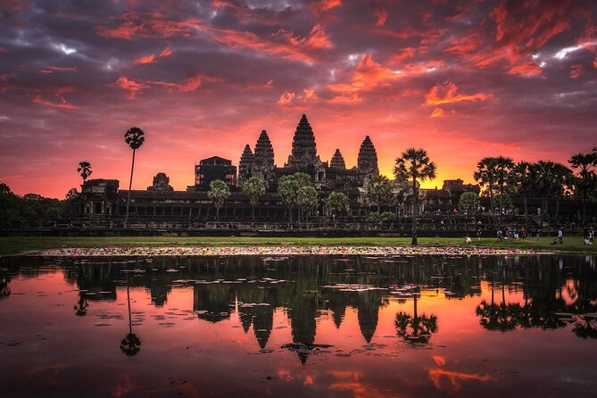

Siem Reap is a captivating city in northwestern Cambodia, renowned globally as the gateway to the Angkor Archaeological Park, which includes the legendary Angkor Wat temple. This majestic complex, a UNESCO World Heritage site, is a testament to the grandeur of the Khmer Empire that ruled much of Southeast Asia from the 9th to the 15th centuries. Angkor Wat, the largest religious monument in the world, is particularly famous for its stunning architecture, intricate carvings, and spiritual significance, drawing millions of tourists and pilgrims annually.
The city of Siem Reap itself offers a fascinating blend of old and new.
The town's architecture reflects its rich history, with charming colonial buildings and traditional Chinese shop-houses lining its streets. At the same time, modern developments have introduced a variety of accommodations ranging from luxurious hotels to budget hostels, along with a diverse array of dining options, from street food stalls to upscale restaurants serving both local and international cuisines.
Siem Reap's vibrant culture is another major draw for visitors. The Old Market (Phsar Chas) and the Night Market are bustling hubs where tourists can buy local handicrafts, souvenirs, and sample authentic Cambodian street food. Traditional Apsara dance performances, depicting scenes from Hindu mythology, are a cultural highlight, often staged in various hotels and restaurants throughout the city.
Beyond its historical and cultural attractions, Siem Reap also offers natural beauty and adventure. The nearby Tonle Sap Lake, the largest freshwater lake in Southeast Asia, is a crucial ecological resource for the region. It hosts floating villages such as Chong Kneas, Kampong Phluk, and Kampong Khleang, where visitors can see unique stilted houses and experience the daily lives of the communities who depend on the lake for their livelihoods. Boat tours on Tonle Sap provide a serene contrast to the bustling city, offering glimpses of rich birdlife and stunning sunsets over the water.
Siem Reap's nightlife is another aspect that enhances its appeal.
Pub Street is the heart of the city's nightlife, teeming with bars, clubs, and restaurants that stay open late into the night, offering a lively atmosphere for socializing and entertainment. For those interested in a more relaxed evening, there are also plenty of cafes and spas where visitors can unwind after a day of exploring temples and markets.
Despite its development as a major tourist hub, Siem Reap maintains a laid-back and welcoming vibe, making it a favorite destination for travelers seeking a mix of historical intrigue, cultural depth, and modern comforts. The city's friendly locals, rich traditions, and diverse attractions ensure that it remains a captivating place to visit, offering something for everyone.
 Angkor Wat is the crown jewel of the Angkor Archaeological Park and one of the most iconic landmarks in Southeast Asia. Constructed in the early 12th century by King Suryavarman II, this immense temple complex was initially dedicated to the Hindu god Vishnu before transitioning to a Buddhist site in the 14th century. Angkor Wat is renowned for its grandiose architecture, extensive bas-reliefs, and symmetrical design, epitomizing classical Khmer artistry. The central tower, surrounded by four smaller towers, symbolizes Mount Meru, the mythical center of the universe in Hindu and Buddhist cosmology. The temple's walls are adorned with thousands of apsaras (celestial dancers) and scenes from Hindu epics such as the Ramayana and Mahabharata. Visiting Angkor Wat at sunrise or sunset offers particularly breathtaking views, as the light casts a golden hue over the temple's sandstone walls, reflecting in the surrounding moat
Ta Prohm often referred to as the "Tomb Raider Temple" due to its appearance in the Angelina Jolie film, is one of the most atmospheric temples in the Angkor complex. Built in the late 12th and early 13th centuries by King Jayavarman VII, Ta Prohm was originally a Buddhist monastery and university. What sets Ta Prohm apart is the unique way in which nature has reclaimed the temple over the centuries. Massive trees grow from the ruins, their roots intertwining with the stone walls and doorways, creating a symbiotic relationship between the temple and the jungle. The site has been deliberately left in much the same condition as it was found, offering visitors a glimpse of how many of the temples of Angkor looked when they were rediscovered in the 19th century. The contrast between the man-made structures and the encroaching forest makes Ta Prohm an unforgettable sight.
 Banteay Srei meaning "Citadel of the Women" or "Citadel of Beauty," is another remarkable temple located about 25 kilometers (15 miles) northeast of the main Angkor complex. Built in the 10th century and dedicated to the Hindu god Shiva, Banteay Srei is unique for its miniature scale and exquisite carvings, which are considered some of the finest in Khmer art. The temple is constructed from pink sandstone, which allows for intricate, detailed carvings that have remarkably withstood the test of time. The walls and lintels are adorned with elaborate depictions of mythological scenes, floral motifs, and celestial beings. Despite its smaller size compared to other temples in Angkor, Banteay Srei's artistry and preservation make it a must-visit destination for those interested in ancient Khmer culture and craftsmanship. The surrounding countryside, with its rice paddies and traditional villages, adds to the charm of a visit to Banteay Srei.
These three sites offer a diverse range of experiences, from the grandeur of Angkor Wat to the mystical atmosphere of Ta Prohm and the intricate beauty of Banteay Srei, showcasing the rich cultural and historical heritage of Siem Reap.
Banteay Srei meaning "Citadel of the Women" or "Citadel of Beauty," is another remarkable temple located about 25 kilometers (15 miles) northeast of the main Angkor complex. Built in the 10th century and dedicated to the Hindu god Shiva, Banteay Srei is unique for its miniature scale and exquisite carvings, which are considered some of the finest in Khmer art. The temple is constructed from pink sandstone, which allows for intricate, detailed carvings that have remarkably withstood the test of time. The walls and lintels are adorned with elaborate depictions of mythological scenes, floral motifs, and celestial beings. Despite its smaller size compared to other temples in Angkor, Banteay Srei's artistry and preservation make it a must-visit destination for those interested in ancient Khmer culture and craftsmanship. The surrounding countryside, with its rice paddies and traditional villages, adds to the charm of a visit to Banteay Srei.
These three sites offer a diverse range of experiences, from the grandeur of Angkor Wat to the mystical atmosphere of Ta Prohm and the intricate beauty of Banteay Srei, showcasing the rich cultural and historical heritage of Siem Reap.